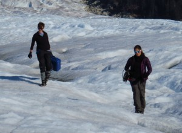
The Glacier Dynamics group at the University of Idaho consists of team members working and learning together to reveal the factors controlling the rapid response of glaciers and ice sheets to environmental forcings. We use geophysical techniques such as seismology, remote sensing, and modeling to understand glacier dynamics, including iceberg calving, water flow through glaciers, and the ice flow response to variable glacier hydrology. Our group is part of the Department of Earth and Spatial Sciences.
Group researchers are identified below.
We're always interested in new, clever, hard working group members. Click here to learn about joining our group.
Our lab group's internal, working manual is hosted here, and includes sections on supporting one another, life and work at UIdaho, our hardware resources, and computing best practices. Our goal is that the lab manual will be communally updated and serve as a living reference for group members.
Current group members

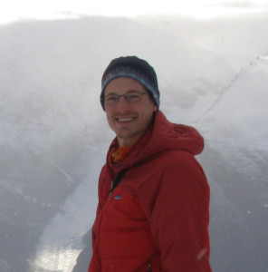
Dr. Timothy Bartholomaus is the lead scientist and principal investigator for the group. He is an Associate Professor in the Department of Earth and Spatial Sciences at the University of Idaho. Tim joined the University of Idaho faculty in 2016, after working as a Research Associate at the University of Texas Institute for Geophysics. His research employs a variety of geophysical techniques to understand fast glacier flow and rapid glacier change. He has led or participated in over 30 field expeditions to glaciers in Alaska, Greenland, Antarctica, and the continental U.S.

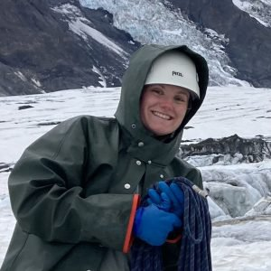
Keeya Beausoleil began working towards her M.S. in the Department of Earth and Spatial Sciences in the fall of 2024. Keeya is using seismic tremor signals recorded across a wide range of glaciers and ice sheets to better understand the links between subglacial water flow and gradually varying, ongoing ground vibrations. Prior to joining our lab group, Keeya completed a B.S. in geophysics at the University of Alberta.

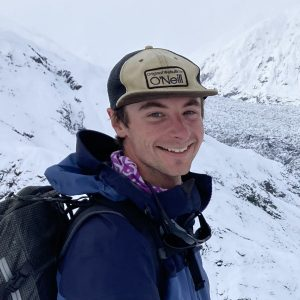
Yoram Terleth is a Ph.D. Student in the Department of Earth and Spatial Sciences. He is working on an NSF-funded project to understand the controls on glacier surges, particularly the role of water within the surge cycle. He uses seismology and numerical modeling to assess subglacial water flow and basal water storage and numerical modeling to develop general theories of unsteady glacier flow. His project relies on field data collected at Sít’ Kusá, near Yakutat, Alaska. Yoram joined us in August 2021 with a M.S. in physical geography from Uppsala University and a B.S. from the University of Amsterdam.

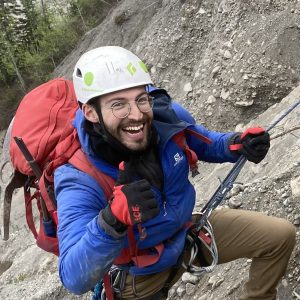
Bruno Belotti is working towards his Ph.D. in the Department of Earth and Spatial Sciences, jointly advised with Prof. Liz Cassel. Bruno joined the Univ. of Idaho in 2021 after completing a B.S. and M.S. at the Univ. of Lausanne. He is working to better understand glacier basal processes through a combination of sedimentology, geochronology, and ice flow modeling. His project is focused around the Chitina Valley in Alaska.

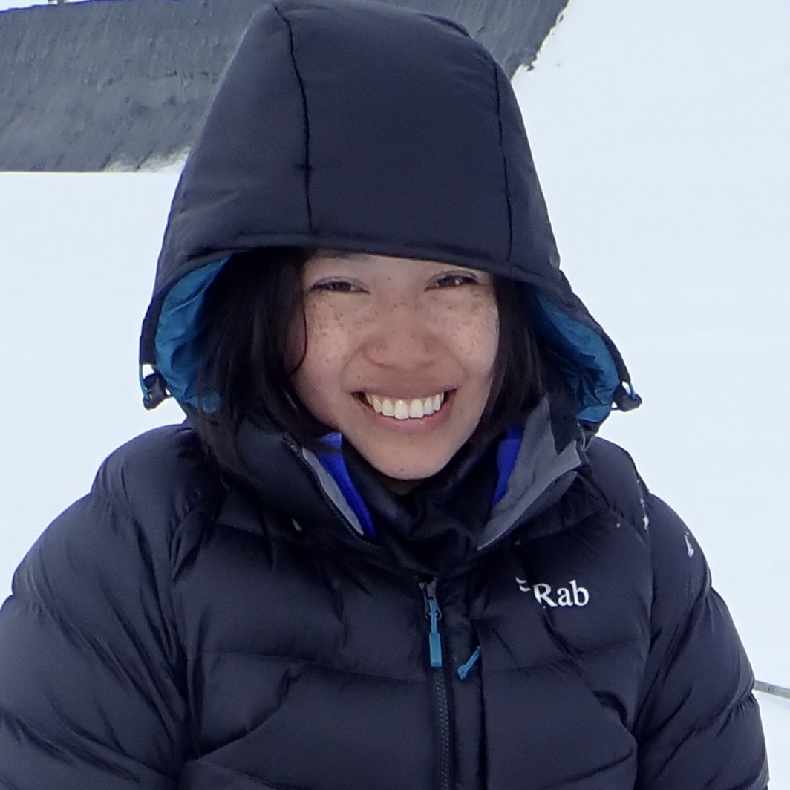
Verenis Lucas is a Masters Student in the Department of Earth and Spatial Sciences, having started at the University of Idaho in Fall 2021. She is working to better understand water infiltration into late-winter/spring snow on a glacier through a combination of direct field observations and numerical modeling of heat diffusion. Prior to arriving at UI, Verenis completed a B.S. in Biology at Mount St. Mary's University in Los Angeles.
Group alumni

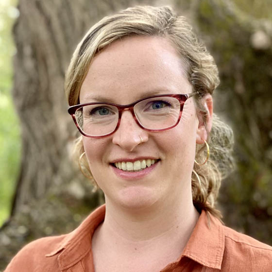
Grace Barcheck was a postdoctoral researcher with our group between 2022 and 2023. She joined our group after completing a Ph.D. in seismology and glaciology at UC Santa Cruz and a postdoc at Cornell University. She has gone on to be an Assistant Professor at Cornell. During her time with our group, Grace's research focused on the analysis of basal icequakes in West Greenland, and inference about basal sliding using those icequakes.

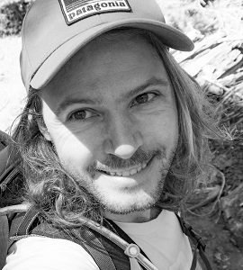
Flavien Beaud worked as a postdoctoral researcher on the Sit Kusa surging glacier project, and with our group between 2022 and 2023. He had completed joined our group after completing a Ph.D. at Simon Fraser University and postdoctoral research at the University of British Columbia. Subsequently, Flavien has gone on to work as a geomorphologist at Northwest Hydraulic Consultants. During his time at UI, Flavien worked with ice penetrating radar and seismic analyses.

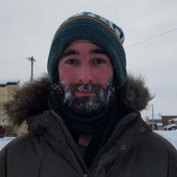
Chris Miele graduated with a Ph.D. in Geological Sciences in 2022. He work on an NSF- and NASA-supported project to better understand the factors controlling iceberg calving around the Greenland Ice Sheet using numerical and remote sensing methods. Chris has gone on to do postdoctoral research in ice sheet modeling at the Univ. of Washington. Chris joined the Univ. of Idaho in August 2018 with a bachelor's degree in mathematics from Simon Fraser University and an M.S. from the University Center of the Westfjords.

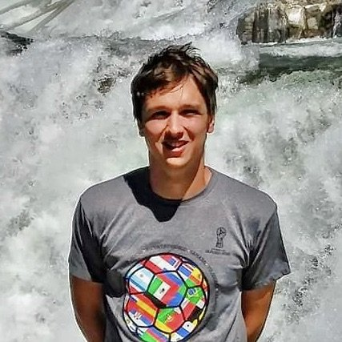
Dakota Pyles graduated with a M.S. in Geological Sciences in 2022, having started at the University of Idaho in Fall 2020. His research used altimetry data from ICESat-2 to better understand tidewater glacier change and surface melt in Greenland. Dakota went on to study for a Ph.D. at Friedrich-Alexander-Universität in Germany. Prior to UI, Dakota received a bachelor's degree in geoscience in May 2019 from the University of Montana and had prior work experience in the Earth sciences as a geological field mapper, as well as outside of the Earth sciences.

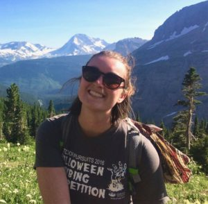
Emma Swaninger graduated from our lab group with a M.S. in Geological Sciences in August 2020. She used data from a terrestrial radar interferometer to study the impact (and lack there-of) of ice melange on glacier dynamics at Rink Isbrae, a glacier in West Greenland. She found that buoyancy driven calving unfolds in a tearing fashion over days, that temporary summer melange can stabilize loose calving ice, and that laboratory estimates of terminal ice strength are likely inappropriately high. Emma joined the group in August 2018 after graduating from Ohio University and time spent working as a geophysical field assistant. After graduating, Emma worked for the department co-ordinating course labs.

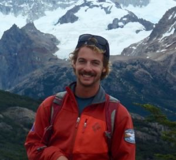
Tristan Amaral graduated with his M.S. in Geological Sciences in May 2019. During his NASA-supported research, he used satellite observations, model output, and other tools to better understand iceberg calving around the entirety of the Greenland Ice Sheet. Tristan's thesis culminated in a paper under review at the Journal of Geophysical Research, titled Evaluation of Iceberg Calving Models Against Observations From Greenland Outlet Glaciers. Tristan has also participated in lab group fieldwork to recover seismic and geodetic instruments deployed in Alaska used to track subglacial water flow. Tristan joined the group in August 2017 after graduating Summa Cum Laude from the Univ. of New Hampshire, and time spent working for the Juneau Icefield Research Program. Following graduation, Tristan went on to an internship at Denali National Park in Alaska, through the Geoscientists in Parks program, then worked for Wrangell-St. Elias National Park.

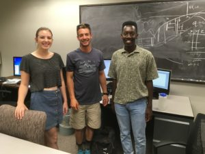
Danny Bugingo and Rian Brumfield worked in the lab during the summer and fall of 2018 as undergraduate research assistants on a NASA project to examine iceberg calving around Greenland. The two UI math majors worked with Tristan Amaral to download, access, and analyze remotely sensed data. Along the way, they picked up essential skills in writing python code and working with GIS. Here, Rian (left) and Danny (right) are pictured in the lab with Tristan.

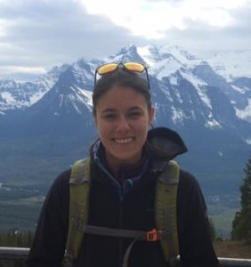
Margot Vore graduated with her M.S. in Geography in May 2018. During her research, she applied seismology and other quantitative methods to understand how the hydrologic system beneath glaciers varies over time. Shortly after arriving at UI, she visited Taku Glacier, in Southeast Alaska, where she helped recover the seismic data that will serve as the foundation for her thesis. Her thesis was published in January 2019 as Seismic Tremor Reveals Spatial Organization and Temporal Changes of Subglacial Water System. Margot joined us in August 2016 with a bachelor's degree in mathematics. Following graduation, Margot applied her quantitative skills as a research assistant at the University of Northern British Columbia.